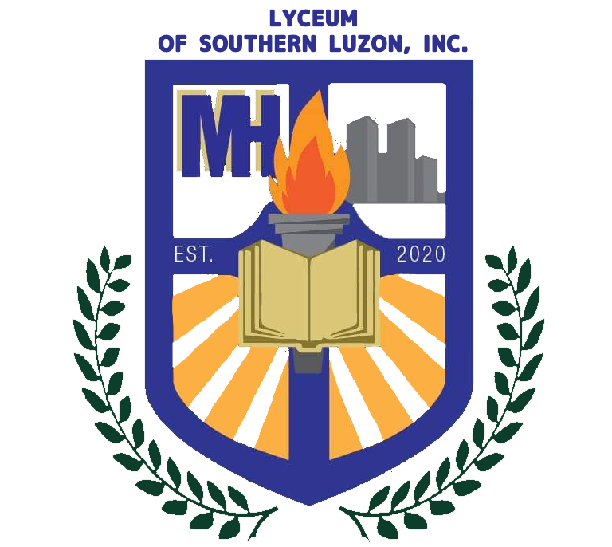
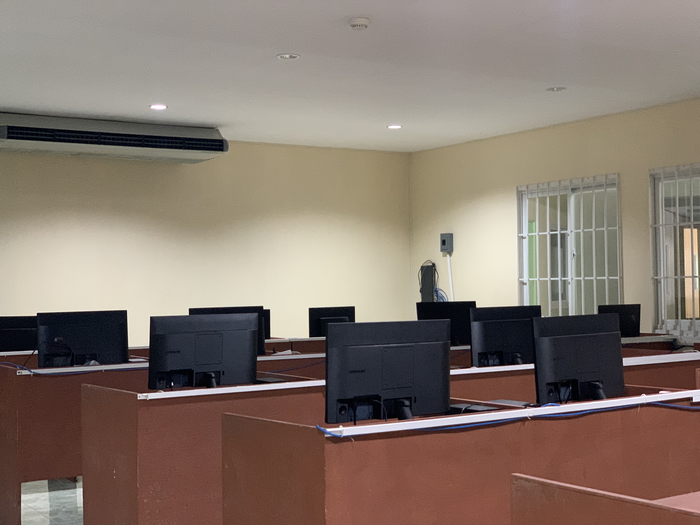
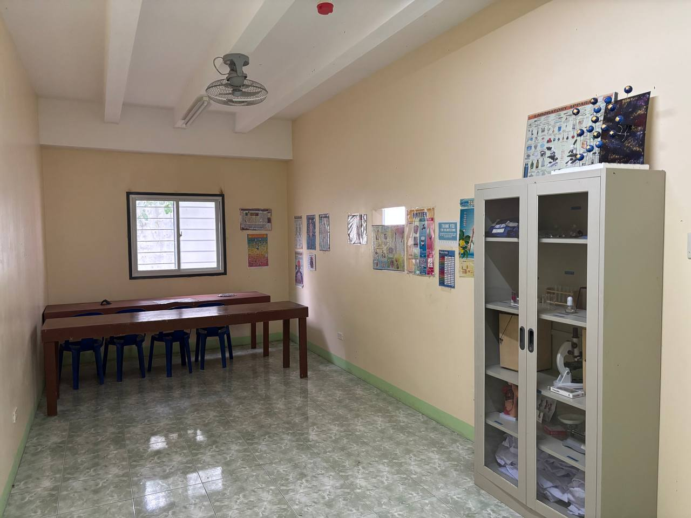
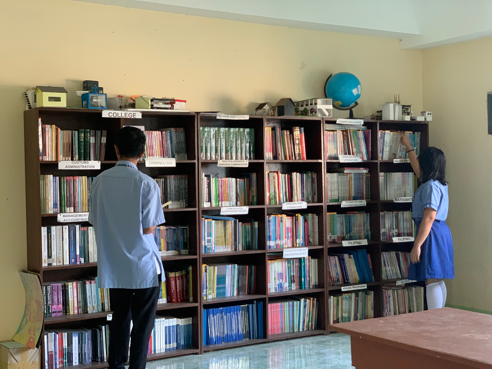
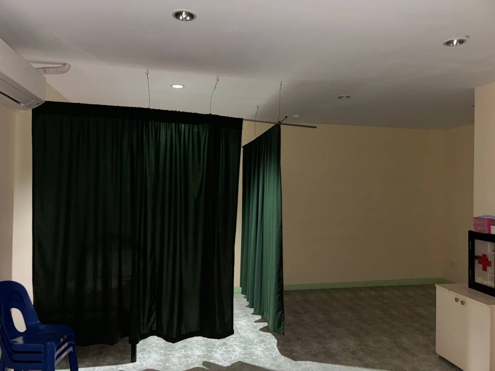

THE PURPOSE OF THIS WEBSITE
Lyceum of Southern Luzon, Balayan Campus greets you! This website aims to inform you more about what LSL can provide to its students! Learn more additional information about Lyceum of Southern Luzon through our site! This is brought to you by the students of ICT 12 JAVA (2025-2026)
VISION
"Expanding the Right Choice for Real Life Education in Southern Luzon"
MISSION
Cognizant to the vital role of real life education, LSL is committed to:
- Provide holistic higher education and technical-vocational programs which are valued by the stakeholders. (ACADEMICS)
- Transform the youth into world-class professionals who creatively respond to ever changing world of work. (GRADUATES)
- Advance research production to improve human life and address societal needs. (RESEARCH)
- Engage in various projects that aim to build strong community relation and involvement. (COMMUNITY)
- Promote compliance with quality assurance in both service delivery and program development. (QUALITY ASSURANCE)
C
o
r
e
-
V
a
l
u
e
s
- ove of God and Country
- outh Empowerment
- ompetent, Committed, and Compassionate in Service
- xcellence in Education
- spiring People
- oble Dreams
LABORATORIES

Computer Laboratory
Lyceum of Southern Luzon provides fast and accessible computers for all lyceans, for both computer studies or not. This laboratory is dedicated to provide technology and software related lessons for Lyceans. Preparing them for the modern world of work.
Science Laboratory
Lyceum of Southern Luzon provides tubes, beakers, microscope and etc. to help students peek into to world of science and discovery.


Library
The key to knowledge can be found in books, and with Lyceum of Southern Luzon's library you can enter the wonderful world of knowledge with its variety of books!
Clinic
Our top priority is the safety and wellbeing of its Lyceans. Incase of any unwell situations, both students and teachers can visit the clinic for a well deserve rest. Incase of any major medical emergencies, Lyceum is fortunately located near a hospital: the Medical Center Western Batangas.

Home Economics room
We provide an immersion room similiar to a house setting. Students can learn and improve upon foundational basic skills such as cleaning and cooking. It is filled with a variety of cooking utensils, tools and appliances providing students a more convinient and educational experience.
ASSOCIATIONS
SUPREME STUDENT COUNCIL
A dedicated body of selected students that embody discipline, integrity and leadership. These students aim to inspire and lead the young students of the Highschool Department. They initiate change and manage school events, ensuring its safety and succesful execution. Additionally, they are responsible for enforcing rules and regulations among school grounds, promoting discipline among fellow students and ensuring the safety and reputation of the school.
CENTER FOR CULTURE AND ARTS
A groovy Lycean dance troupe that show off its rhythm and passion for the arts of dancing. Do you have the moves? The love for beats and tunes? Join the CCA dance troupe to show them off!